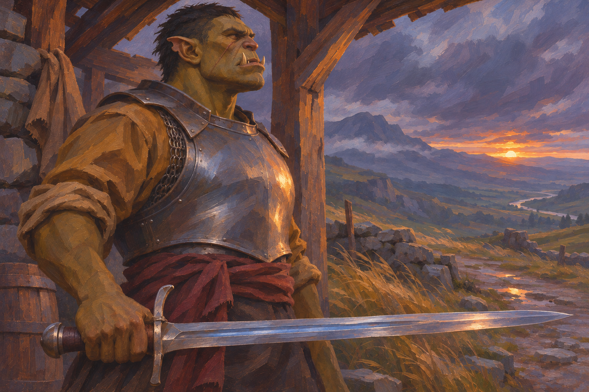
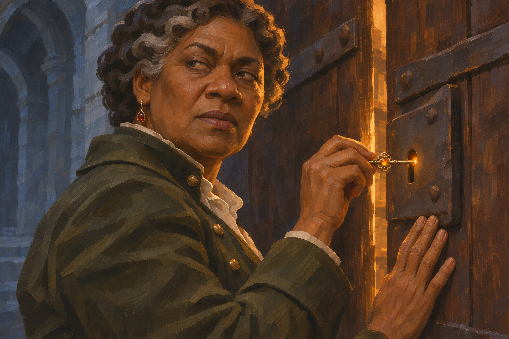
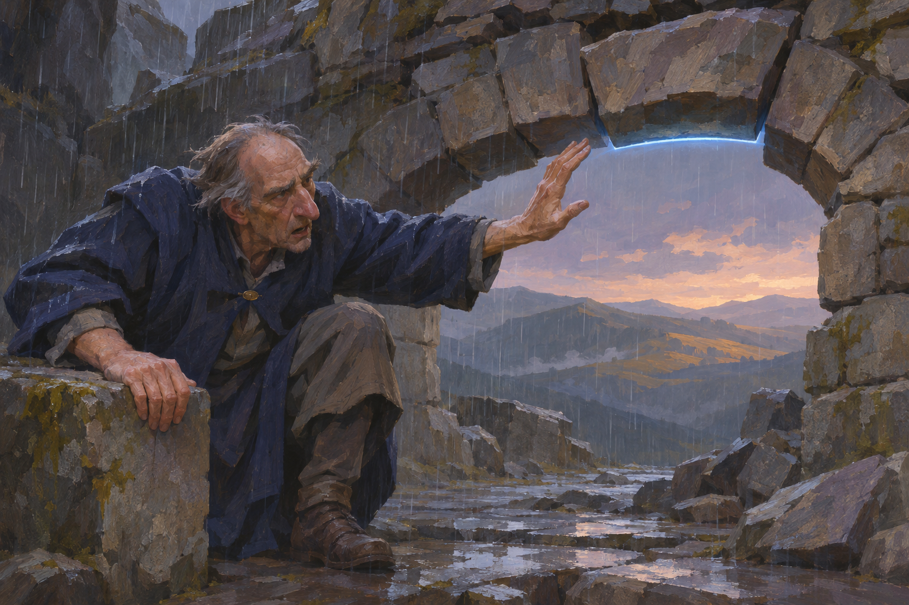
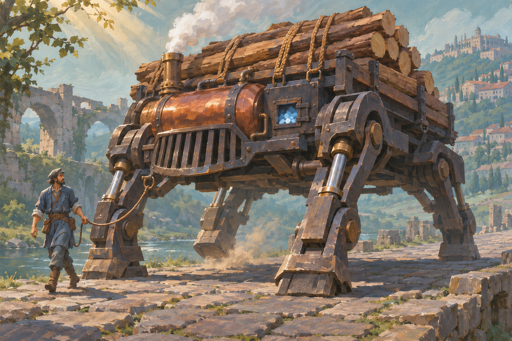
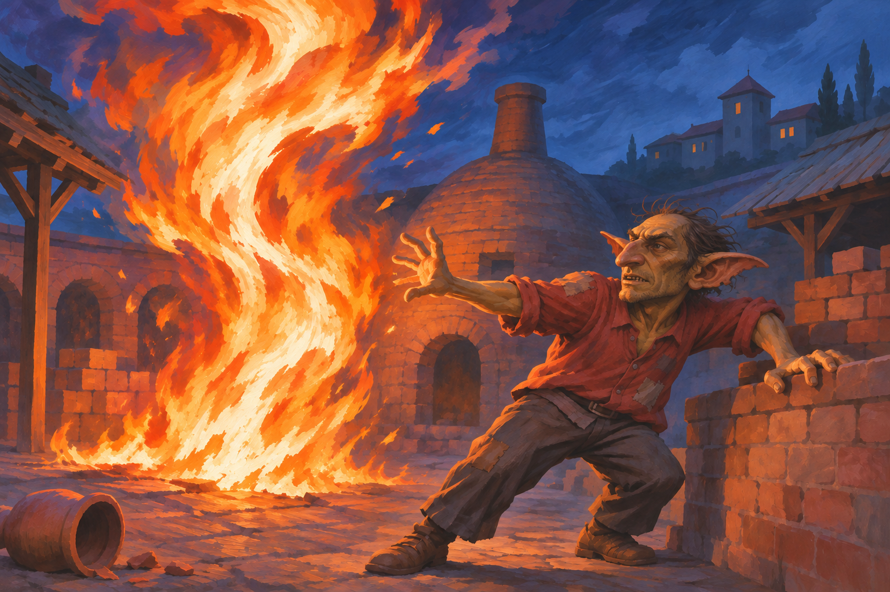
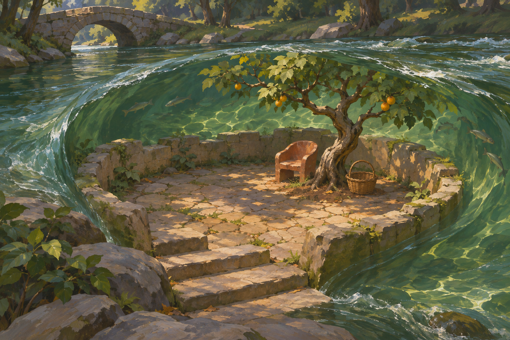

The Blade He Inherited
A non-mage can own and use a remarkable weapon. The heirloom stays elegant and valuable; its wearer is an individual Fervor fighter, not a faction uniform.

A Key Worth a House
A small luxury enchantment in ordinary hands. The key opens an ordinary lock; intrigue and divided light do the storytelling.

The Last Steady Hand
A trained caster is visibly exhausted but still precise. The stone stays controlled; fatigue does not automatically become an explosion.

The Copperback Carrier
Magic-supported steam at the scale of a substantial working construct. A narrow-purpose carrier with no human body, futuristic face or implied human intelligence.

The Ashwood Reserve
A scholarly staff with replaceable stored-mana fuel. The staff is an elegant crafted object, and the spent stone is expendable; it is not a rechargeable-stone rule.

More Fire Than Hands
Cinderfall’s heat and scale brought into a smaller, personal accident. An unusually gifted goblin has more raw power than control; this is an exceptional failure, not the normal result of a missed spell.

A Dragon Listening
Communication as an encounter with a powerful, nonhuman intelligence. The connection is suggested through attention, not speech bubbles, a tame pet pose or a mandatory visible magical tether.
Creator confirmed complex ideas can pass through a dragon connection, but communication is difficult. This is not approval of this painting.

The Orchard Under the River
A deliberately impractical, localized wonder: a small dry orchard hollow beneath flowing water. It tests lasting enchantments in places without declaring who made it or how it is sustained.
Creator confirmed rare places can retain enchantments for years without an active caster. This does not approve this painting or fix this garden's particular history or mechanism.
